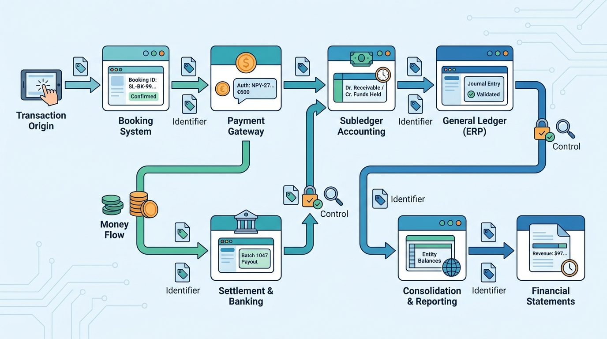

Part III — INTEGRATION: The Finance Estate as One System
The Life of a Booking: From €600 Payment to $97.38 of Revenue

Image generated by Google Gemini (gemini-3-pro-image-preview)
Part III — INTEGRATION: The Finance Estate as One System

Image generated by Google Gemini (gemini-3-pro-image-preview)